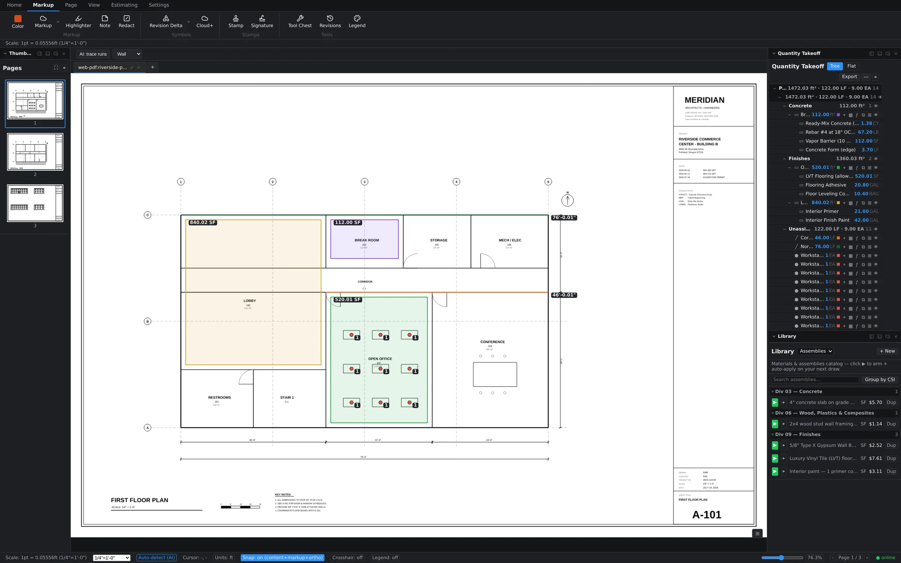
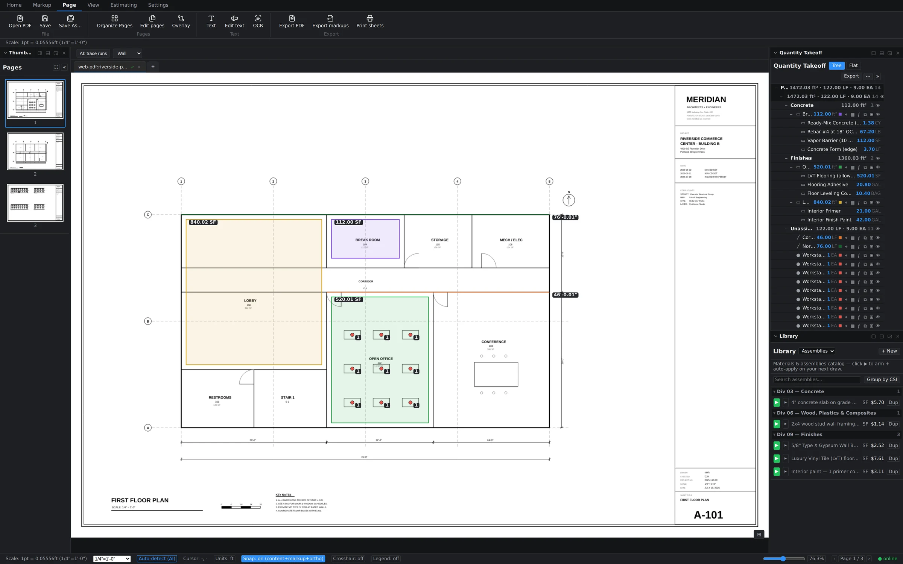
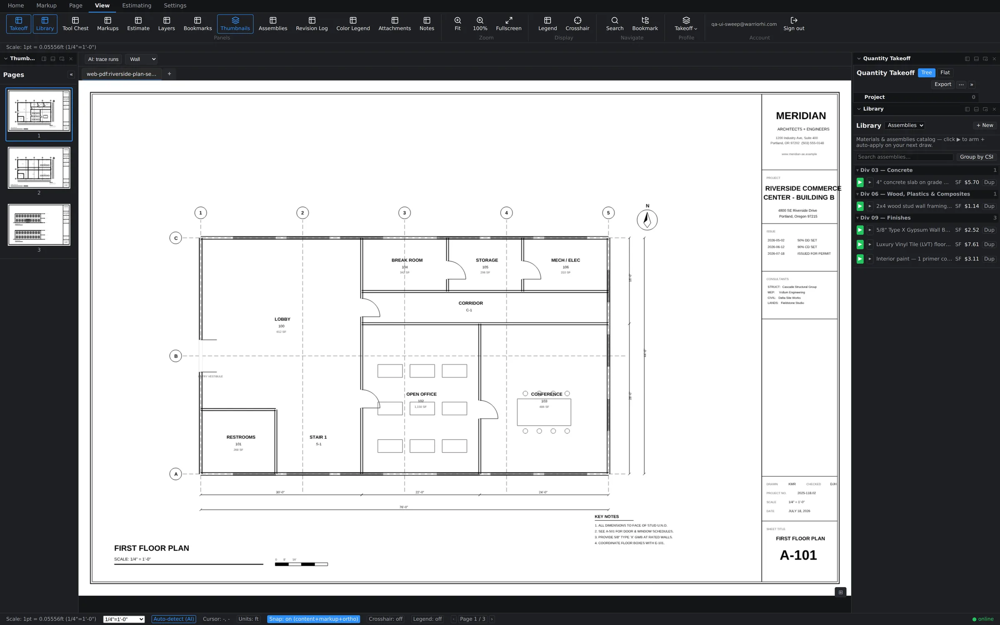
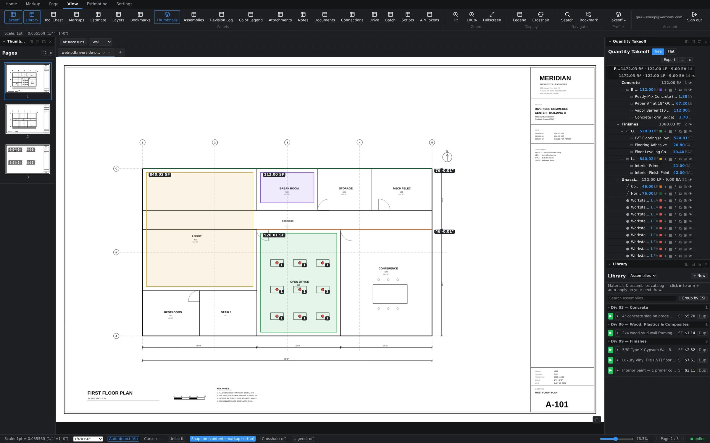

The six ribbon tabs
The ribbon is organized by job, not by feature count. Six tabs: Home, Markup, Page, View, Estimating, and Settings. You'll live in Home; the rest are there when you need them.
Home — where the measuring happens
Navigation (Back, Forward, Fit), the Select tool, all six measurement tools — Linear, Perimeter, Area, Volume, Count, Dimension — plus color, quick markup, highlighter, notes, image stamps, overlay, and AI Detect. If you're doing takeoff, your cursor rarely leaves this tab.

Markup — annotation and review
Everything for redlining and documenting changes: Color, Markup, Highlighter, Note, Redact, Revision Delta, Cloud+, Stamp, Signature, the Tool Chest, the Revision Log, and the color Legend.

Page — managing the document itself
Insert, extract, and rotate pages — the document-surgery cluster for assembling a working set out of whatever PDFs the architect sent.

View — panels and screen real estate
One toggle per panel — nineteen of them, from Takeoff and Library through Batch, Scripts, and API Tokens — plus Fit, 100%, Fullscreen, Legend, Crosshair, Search, and Bookmark. Your role profile and Sign out live here too.

Estimating and Settings
Estimating holds the Estimate grid, Assembly Library, Assembly Builder, Materials, and the export cluster (CSV, Excel, Batch export). Settings is app preferences — including the AI configuration used by AI Detect.
Dockable panels
Panels dock around the drawing: the Quantity Takeoff tree and Library sit on the right by default, the Estimate grid docks along the bottom, and everything else — Markups list, Layers, Bookmarks, Thumbnails, Revision Log, and more — toggles on from the View tab. Turn on what your trade needs and leave the rest off; the layout is yours.

The status bar
The strip along the bottom is a live instrument panel: a calibrated cursor readout in real-world feet, your display units, the snap mode, the page's scale label (e.g. 1/4" = 1'-0"), a zoom slider with an editable percentage, the page indicator, and an online dot showing your sync status. While you're drawing, it also shows the running measurement — length or area updating with every vertex.